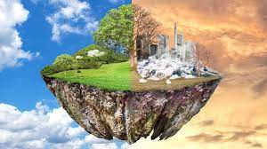

CONTENEDOR AZÚL
En este contenedor se depositan:
- PAPEL
- CAJAS DE CARTÓN
- ENVASES DE ALIMENTACIÓN
- CALZADO
- PRODUCTOS CONGELADOS
- PAPEL DE ENVOLVER
- PAPEL DE USO DIARIO
En este contenedor NO se depositan:
- Briks Deben ir al contenedor amarillo, porque está compuesto no solo por cartón, sino también de plástico y aluminio
- Servilletas y papel de cocina usado Contenedor de residuos orgánicos
- Pañales y compresas Contenedor de restos.
Tu papel es importante.
Recuerda No tirar papeles y cartones en la calle.
Y por último recuerda poner en práctica las 3 r, que son: Reducir, Reutilizar y Reciclar.
Nuestro planeta es el único hogar que tenemos, tratemos de cuidarle un poco más antes de terminar todos los recursos que nos quedan de él.  
 Tratemos de evitar que esto empeore.
Tratemos de evitar que esto empeore.